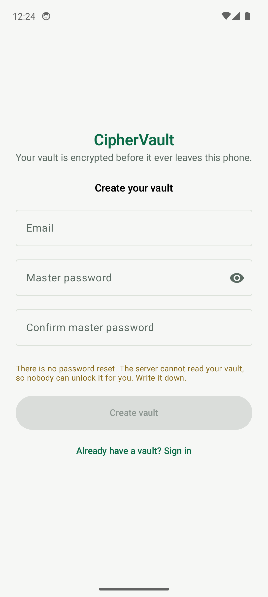
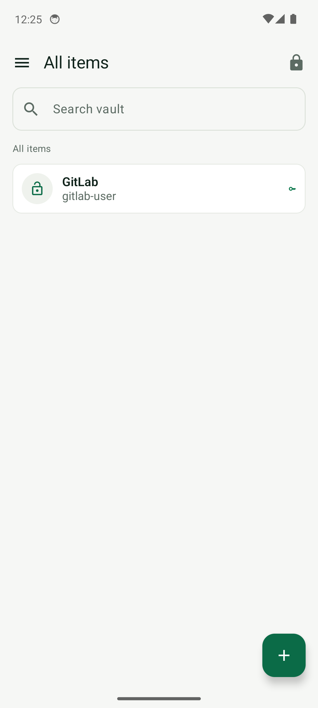
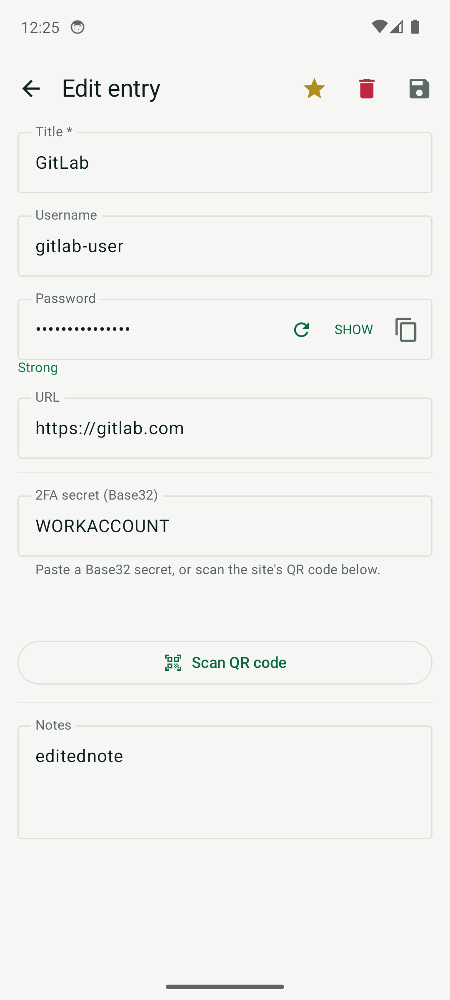
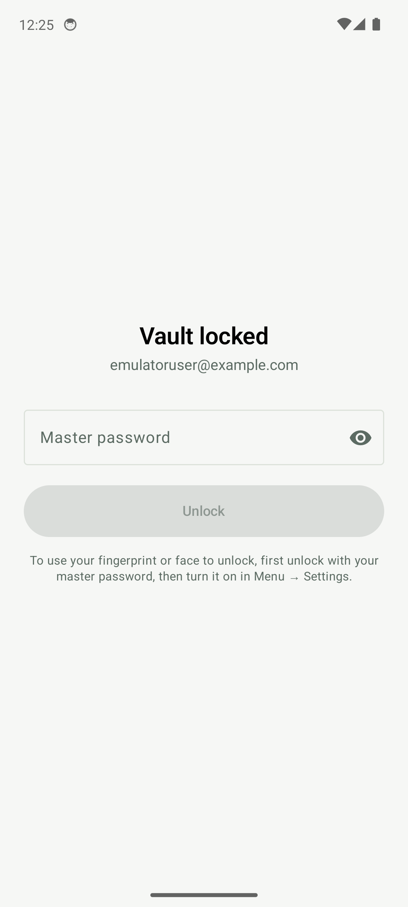

The zero-knowledge password manager for Android. Argon2id on device, AES-256-GCM in transit and at rest on the server, offline-first sync — and a server that can never read a single password.
v0.1.2 · Android 8.0+ (API 26) · Apache-2.0 ·
SHA-256 2a763d21…17f550441 · Browser add-on for Chrome & Firefox
Logins, notes, cards, identities and a built-in authenticator — with none of the telemetry that usually comes along for the ride.
Logins, secure notes, payment cards, identities and standalone TOTP seeds, with custom fields, favorites and fast search.
A real Android AutofillService: fills and saves credentials in other apps with registrable-domain-aware matching.
On-device TOTP codes (SHA1/256/512, custom digits and period), a camera QR scanner and otpauth:// link support.
Random generation with proper shuffling — no predictable character-class placement.
Hygiene audit for weak, reused and breached passwords, with Have I Been Pwned k-anonymity checks that never send your password.
Read and edit locally, sync when you're back. Revision-conflict aware, with atomic password changes that revoke other sessions.
Hardware-backed (TEE/StrongBox) key wrapping released only after BiometricPrompt; optional face unlock with an explicit warning.
See every signed-in device, sign out others in one tap, and read a full security activity log inside the app.
No analytics, no ads, no trackers, no cloud backups of vault material, no plaintext exports.
Zero-knowledge isn't a marketing word here — it's the architecture.
allowBackup=false so nothing lands in cloud backups.Captured from the debug build — the release build blocks screenshots by design.




Signed release APK, straight from GitHub. Verify the checksum, install, and your vault is yours.
Fill and save the logins of the vault in your browser — Chrome, Edge, Brave or Firefox — with the same zero-knowledge keys as the app. The add-on never holds your master password, only the derived keys, and its session dies when the browser closes.
Chrome / Edge / Brave: open chrome://extensions, enable Developer
mode, choose Load unpacked and pick the unzipped folder.
Firefox: open about:debugging#/runtime/this-firefox, choose Load
Temporary Add-on… and pick manifest.json.
The add-on derives the app’s exact PBKDF2 → HKDF keys and pulls your encrypted vault. Click Fill on an entry and it types username + password straight into the page’s login form — including React-managed inputs.
Submit a login form that isn’t saved yet and the add-on raises a “Save this login?” banner — it merges the new entry into your vault and pushes it, revision-safe like every other CipherVault client.
Login fill/save only. Vault editing stays in the app. Argon2id accounts (post-migration) show a friendly pointer to unlock in the app first, because browser WebCrypto has no Argon2.
Effective date: 16 October 2026. Plain language, no lawyer fog.
CipherVault is a zero-knowledge password manager. Your vault contents are encrypted on your device before they are sent to our server. We cannot read your passwords, notes, cards or authenticator secrets, and we cannot recover your master password for you.
| Data | Why | Where |
|---|---|---|
| Email address | Account identity, sign-in | Server database |
| Password verifier (a hash derived from your master password) | Proves your password at sign-in without transmitting it | Server database |
| Encrypted vault blob and its revision number | Sync between your devices | Server database |
| KDF parameters and salt | Key derivation on your devices | Server database |
| Session records (issue time, device name, last activity) | “Sign out other devices” and session management | Server database |
| Security audit events (sign-in success/failure, sync, password or KDF changes, timestamps, IP address, coarse device name) | Abuse detection and the in-app Security activity log | Server database |
| Rate-limit counters keyed by IP | Prevent brute force | Server memory/database |
We do not collect contacts, location, advertising identifiers, or usage analytics. There are no third-party analytics, advertising or tracking SDKs. QR barcode scanning for two-factor secrets happens entirely on the device; scanned data is never uploaded.
Vault items are encrypted with a key derived from your master password using Argon2id (or PBKDF2-SHA256 for older accounts). The server stores ciphertext only. Anyone who obtains a copy of the database still cannot read your vault without your master password.
Changing your master password re-encrypts the vault and signs out every other device. The Settings screen lists active sessions and lets you sign out other devices at any time.
The add-on signs in with a device record named “CipherVault Addon” and keeps its derived
keys and encrypted vault in storage.session — browser memory that is discarded
the moment the browser closes. It stores nothing to disk, syncs nothing beyond the same
encrypted blob the app already exchanges, and never reads the master password beyond your
deliberate sign-in.
Accounts and their server-side data are retained while the account exists. Deleting the app does not delete the server account; contact the operator to request account deletion. Security audit events are retained for the account's lifetime so the in-app activity log stays accurate.
Data in transit is protected by TLS with certificate pinning in the app. Vault blobs are authenticated with AES-256-GCM bound to your account id and revision number. Release builds block screenshots, and copied secrets are cleared from the clipboard after a short timeout.
The app is not directed at children under 13 (or the minimum age required in your jurisdiction).
Material changes to this policy will be reflected here with an updated effective date.
Nobody can recover it — including us. That is the direct consequence of a server that cannot decrypt your vault. Write your master password down and store it somewhere physical.
Yes. Unlocking and reading your vault are fully offline; changes sync when you're back online.
The Android app is fully open source in this repository. Hosted accounts use the CipherVault sync API operated by the project; the app talks to any compatible endpoint.
F-Droid's anti-features policy rejects the ML Kit on-device barcode model used for QR scanning. The core vault contains no third-party SDKs.